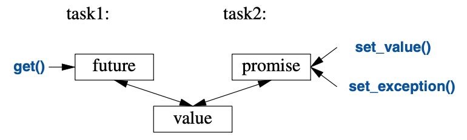

15
并发
让事物保持简单：
越简单越好，
但不要过头。
– —— 阿尔伯特·爱因斯坦1
15.1 导言
并发——同时执行多个任务——被大量用于提高吞吐量（为单个计算任务使用多处理器的方式） 或提升响应能力（方法是在程序的一部分处理业务的同时，另一部分提供响应）。 所有的现代编程语言都支持并发。 C++里有个久经20多年考验，获得现代硬件普遍支持的并发方式， C++标准库提供的支持是上述方法的一个变种，具备可移植性且类型安全。 标准库对并发的支持着眼于系统层面的并发，而不是直接提供高级并发模型， 后者可以作为程序库的形式呈现，利用标准库提供的设施进行构建。
对于多线程在单地址空间上的并发执行，标准库提供了直接的支持。 为此，C++提供一个相应的内存模型以及一组原子操作。 原子操作支援无锁编程[Dechev,2010]。
关于这个内存模型，只要程序员能避免数据竞争（对可变数据的失控并发访问），
它就确保一切能够无脑地执行得丝般顺滑。
但是，大多数用户所见的并发形式，表现为标准库以及构建于其上的程序库。
本章为标准库支持并发的构件提供简短示例：thread、mutex、
lock()操作、packaged_task、future。
这些特性直接建立在操作系统提供的功能之上，且不会造成性能损失。
当然，对操作系统的相关功能也没有显著的性能提升。
千万别以为并发是万全之策。 如果一个任务可以顺序搞定，那它通常是更简单、更快捷的方式。
作为显式应用并行特性的替代方案， 利用并行算法通常可以获取更好的性能（§12.9，§14.3.1）。
15.2 任务和thread
某个计算，如果有可能与其它计算并发执行，我们就称之为一个任务（task）。
线程（thread）是任务在程序里的系统级表示。
对于需要与其它任务并发执行的任务，可做为参数构造一个std::thread
（在<thread>里）来启动。任务是一个函数或者函数对象：
void f(); // 函数
struct F { // 函数对象
void operator()(); // F的调用操作符（§6.3.2）
};
void user()
{
thread t1 {f}; // f() 在单独的线程里和执行
thread t2 {F()}; // F()() 在单独的线程里和执行
t1.join(); // 等待t1
t2.join(); // 等待t2
}
这两个join()确保我们在两个线程运行完之前不会退出user()。
“加入（join）”某个thread的意思是“等待这个线程终止”。
一个程序的线程之间共享同一个地址空间。
此处的线程有别于进程，进程间一般不会直接共享数据。
因为线程共享同一个地址空间，它们可以通过共享对象（§15.5）进行通信。
此类通信通常用锁或其它机制以避免数据竞争（对变量的失控并发访问）。
编程并发任务可能特别棘手。
琢磨以下任务f（函数）和F（函数对象）可能的实现：
void f()
{
cout << "Hello ";
}
struct F {
void operator()() { cout << "Parallel World!\n"; }
};
这展示了一个严重的错误：f和F()都用到了cout对象，但没通过任何形式进行同步。
输出的结果是无法预料的，而且该程序每次执行的结果都可能有差异，
原因在于，两个任务中各自操作的执行顺序是未定义的。
这个程序的输出可能会有点“莫名其妙”，比如这样的：
PaHerallllel o World!
只有标准库里某个特定的保障才能力挽狂澜，
以避免ostream定义里的数据竞争导致可能的崩溃。
为并发程序定义任务的目标是，除简单明确的通信之外，保持任务相互间完全独立。 关于并发任务，最简单的思路是把它看做一个函数，仅仅是恰好与它的调用者同时运行。 为此，只需要传递参数，获取结果，并确保它们间不使用共享数据（没有数据竞争）。
15.3 参数传递
一般来说，任务需要待加工的数据。 数据（或指向它的指针、引用）可以简单地作为参数传递。琢磨这个：
void f(vector<double>& v); // 函数：处理v
struct F { // 函数对象：处理v
vector<double>& v;
F(vector<double>& vv) :v{vv} { }
void operator()(); // 调用操作符 §6.3.2
};
int main()
{
vector<double> some_vec {1,2,3,4,5,6,7,8,9};
vector<double> vec2 {10,11,12,13,14};
thread t1 {f,ref(some_vec)}; // f(some_vec) 在单独的线程里运行
thread t2 {F{vec2}}; // F(vec2)() 在单独的线程里运行
t1.join();
t2.join();
}
显然，F{vec2}在F中保存了参数vector的引用。
然后F就可以操作这个vector，但要祈祷在F运行时没有其它任务访问vec2。
为vec2传值可以消除这个风险。
{f,ref(some_vec)}这个初始化利用了thread的可变参数模板构造函数，
它接受任意的参数序列（§7.4）。
ref()是个来自<functional>的类型函数，很遗憾，
让可变参数模板把some_vec作为引用而非对象时少不了它。
如果缺少ref()，some_vec将以传值的方式传递。
编译器会检查能否用后续参数调用第一个参数，然后构造必要的函数对象传递给线程。
这样，F::operator()()和f()就执行同样的算法，两个任务的处理方式如出一辙：
两种情况下，都是构造一个函数对象给thread去执行。
15.4 结果返回
在 §15.3 的例子中，参数按照非const引用的方式传递。
我仅在需要任务对引用的数据（§1.7）进行修改时才这么做。
这个返回结果的方式略有点旁门左道，但并不稀奇。
有个更通俗的方式是把输入数据以const引用方式传递，
再传递一个位置作为单独的参数，用于保存结果：
void f(const vector<double>& v, double* res); // 从v获取输入；结果放进 *res
class F {
public:
F(const vector<double>& vv, double* p) :v{vv}, res{p} { }
void operator()(); // 结果放进 *res
private:
const vector<double>& v; // 输入源
double* res; // 输出目标
};
double g(const vector<double>&); // 使用返回值
void user(vector<double>& vec1, vector<double> vec2, vector<double> vec3)
{
double res1;
double res2;
double res3;
thread t1 {f,cref(vec1),&res1}; // f(vec1,&res1) 在单独的线程里运行
thread t2 {F{vec2,&res2}}; // F{vec2,&res2}() 在单独的线程里运行
thread t3 { [&](){ res3 = g(vec3); } }; // 以引用的方式捕获局部变量
t1.join();
t2.join();
t3.join();
cout << res1 << ' ' << res2 << ' ' << res3 << '\n';
}
此代码运行良好，并且该技术也很常见，但我觉得通过引用传回结果不够优雅， 所以，§15.7.1会再聊到这个话题。
15.5 共享数据
有时候任务之间不得不共享数据。 这种情况下，数据访问必须要同步，以便同一时刻最多只有一个任务访问数据。 资深程序员会觉得这有点以偏概全（比如，多个任务同时读取不可变的数据就没问题）， 但请考虑这个问题： 对于一组给定的对象，在同一时刻，如何确保至多只有一个任务进行访问。
解决方案的基本要素是mutex（互斥量），
一个“互斥对象（mutual exclusion object）”。
thread执行lock()操作来获取mutex：
mutex m; // 参与控制的互斥量
int sh; // 共享数据
void f()
{
scoped_lock lck {m}; // 获取互斥量
sh += 7; // 操作共享数据
} // 隐式释放互斥量
lck的类型被推导为scoped_lock<mutex>（§6.2.3）。
scoped_lock的构造函数负责获取互斥量（方法是调用m.lock()）。
如果另一个线程已经获取了这个互斥量，
当前线程就要等待（“阻塞”）到另一个线程访问结束。
待某个线程访问共享数据结束，
scoped_lock就会（调用m.unlock()）释放这个mutex。
当mutex被释放，等待它的thread就恢复执行（被唤醒）。
互斥量和锁构件的定义都在<mutex>里。
请留意RAII（§5.3）的运用。
使用scoped_lock、unique_lock之类的执柄，
比显式锁定和解锁mutex简单而且安全得多。
共享数据和mutex间的对应关系是约定俗成的：
程序员只需要知道哪个mutex对应哪个数据即可。
显而易见这容易出错，同样不言而喻的是，明确这种对应关系的方式也多种多样。
例如：
class Record {
public:
mutex rm;
// ...
};
无需天赋异秉就能猜到，对于一个名为rec的Record，
在访问rec的其余内容之前，应该先获取rec.rm，
使用注释或更贴切的变量名，可以进一步提升可读性。
同时访问多个资源的操作并不罕见。这可能导致死锁。
例如，如果thread1获取了mutex1，然后试图再获取mutex2，
而此时thread2已经获取了mutex2并试图获取mutex1，
这样，二者就都无法继续执行了。
这是scoped_lock的用武之地，它同时获取多个锁来解决这个问题：
void f()
{
scoped_lock lck {mutex1,mutex2,mutex3}; // 三个锁全部获取
// ... 处理共享数据 ...
} // 隐式释放所有的互斥量
只有在获取参数中的所有锁之后，这个scoped_lock才继续执行，
并且在持有mutex的情况下绝不会阻塞（“进入休眠”）。
当thread离开这个作用域时，scoped_lock的析构函数会确保释放这些mutex。
使用共享数据通信是个非常低级的方法。
尤其是，程序员还要搞清楚不同任务之间工作完成情况的各种组合。
在这方面，共享数据的使用相较于调用与返回的概念可就逊色太多了。
另一方面，有些人坚信数据共享比复制参数和返回的效率高。
如果涉及的数据量非常大，可能的确如此，但锁定和解锁操作的代价都相对高昂。
相反，现代的硬件都很擅长复制数据，尤其是紧凑的数据，比如vector那些元素。
因此，不要出于“效率”原因而不假思索也不进行测量就选择共享数据进行通信。
基础的mutex限定同一时刻仅有一个线程访问数据。
有一个最普遍的方式，是在众多读取者和单一的写入者之间进行共享。
shared_mutex支持这种“读写锁”。
一个读取者会申请“共享的”互斥量，以便其它读取者仍然能够访问，
而写入者则要求排他性的访问，比如：
shared_mutex mx; // 可共享的互斥量
void reader()
{
shared_lock lck {mx}; // 乐于同其它读取者分享访问权限
// ... 读取 ...
}
void writer()
{
unique_lock lck {mx}; // 需要排他性（唯一的）访问
// ... 写入 ...
}
15.6 等待事件
有些情况下，thread需要等待外部事件，比如另一个thread完成了某个任务，
或者经过了特定长度的时间。最简单的“事件”是时间流逝。
利用<chrono>中的时间相关功能，可以这么写：
using namespace std::chrono; // 参见 §13.7
auto t0 = high_resolution_clock::now();
this_thread::sleep_for(milliseconds{20});
auto t1 = high_resolution_clock::now();
cout << duration_cast<nanoseconds>(t1-t0).count() << " nanoseconds passed\n";
请注意，我甚至不需要启动一个thread；
默认情况下，this_thread指向当前唯一的线程。
此处用了duration_cast将时间单位调整为我想要的纳秒。
对于利用外部事件进行通信的基本支持由<condition_variable>
中的condition_variable提供。
condition_variable是个允许一个thread等待其它线程的机制。
确切地说，它允许thread等待某种条件（condition）
（通常称为事件（event））的发生，作为其它thread完成作业的结果。
使用condition_variable可以支持许多优雅且高效的共享方式，但可能要费些周折。
考虑经典的例子：两个thread借助一个queue传递消息进行通信。
为叙述简洁，我把queue和避免它发生数据竞争的机制定义在全局作用域
供生产者和消费者访问：
class Message { // 通信中使用的对象
// ...
};
queue<Message> mqueue; // 消息队列
condition_variable mcond; // 变量通信事件
mutex mmutex; // 用于同步对mcond的访问
queue、condition_variable、mutex这些类型都由标准库提供。
consumer()读取并处理Message：
void consumer()
{
while(true) {
unique_lock lck {mmutex}; // 申请 mmutex
mcond.wait(lck,[] { return !mqueue.empty(); }); // 释放 lck 并进入等待
// 在被唤醒时重新申请 lck
// 只要mqueue是空的就不要唤醒
auto m = mqueue.front(); // 取消息
mqueue.pop();
lck.unlock(); // 释放 lck
// ... 处理 m ...
}
}
此处，我把一个unique_lock用于mutex，
显式为queue和condition_variable上的操作提供保护。
condition_variable进入等待时释放它的锁参数，
等待结束（即队列非空）时重新获取它。
此处的!mqueue.empty()对条件进行显式查询，
以防唤醒后发现其它任务已经“领先一步”，以至于该条件不再成立。
此处选择unique_lock而非scoped_lock，出于两个原因：
- 需要将锁传给
condition_variable的wait()。scoped_lock无法复制，而unique_lock可以。 - 在处理消息之前，需要给
mutex加锁以保护条件变量。unique_lock提供了lock()、unlock()这些操作，用于低层次的同步控制。
另外，unique_lock只能处理单个的mutex。
配套的producer是这样的：
void producer() {
while(true) {
Message m;
// ... 填写信息 ...
scoped_lock lck {mmutex}; // 保护下一条代码的操作
mqueue.push(m);
mcond.notify_one(); // 提示
} // 释放锁（在作用域结束处）
}
15.7 通信任务
标准库提供了几个构件，以便程序员能够在任务（可能需要并发的工作）的概念层级进行操作， 而不必直面线程和锁这么低的层级：
future和promise从 在单独线程上生成的任务 里返回一个值package_task协助启动任务并连接返回结果的机制async()以酷似函数调用的方式启动一个任务
这些构件都在头文件<future>内。
15.7.1 future和promise
future和promise侧重点在于，两个任务之间传递值时，它们能避免锁的显式使用；
“系统”高效地实现这个传递。
基本思路很简单：一个任务需要给另一个任务传递值时，就把这个值放进promise。
“大变活值”之后，具体实现会把这个值弄进对应的future里，
（通常是该任务的启动者）就能从future里把值读出来了。
此过程图示如下：

如果有个名为fx的future<X>，就能从里面get()到一个X类型的值：
X v = fx.get(); // 必要的话，等待这个值被计算出来
如果这个值尚未就绪，等待读取它的线程就会阻塞，直到它现身为止。
如果这个值算不出来，get()可能会抛出异常
（来自系统，或者从试图get()这个值的任务里传出来）。
promise的作用是提供一个简洁的“放置（put）”操作
（名称是set_value()和set_exception()），
匹配future的get()。
“future”和“promise”的命名是个历史遗留问题；
所以，别让我代人受过，也别让我掠人之美。
很多其它俏皮话儿也都是从它们这来的。
如果你的promise需要发送X类型的结果给future，
有两种选择：传一个值或者传一个异常。例如：
void f(promise<X>& px) // 一个任务：把结果放进px
{
// ...
try {
X res;
// ... 给res计算值 ...
px.set_value(res);
}
catch (...) { // 矮油：res难产了
px.set_exception(current_exception()); // 把异常传给future所在的线程
}
}
此处的current_exception()指向被捕获的异常。
要处理future发过来的异常，get()的调用者必须在某处做好准备捕捉它。例如：
void g(future<X>& fx) // 一个任务：从fx里提取结果
{
// ...
try {
X v = fx.get(); // 必要的话，等待这个值被计算出来
// ... 使用 v ...
}
catch (...) { // 矮油：有银儿搞不定v了涅
// ... 处理错误 ...
}
}
如果g()无需自己处理错误，代码可以做到最精简：
void g(future<X>& fx) // 一个任务：从fx里提取结果
{
// ...
X v = fx.get(); // 必要的话，等待这个值被计算出来
// ... 使用 v ...
}
15.7.2 packaged_task
怎么做才能把future放进等待结果的任务，
并且把对应的promise放进那个产生结果的线程呢？
想要把任务跟future对接，把promise跑在thread上，
使用packaged_task类型可以简化设置操作。
packaged_task封装了代码，能够把任务的返回值或异常放进promise
（如§15.7.1中代码所示）。
如果调用get_future()对packaged_task进行查询，
它会给你对应其promise的future。
例如，可以设置两个任务，分别用accumulate()（§14.3）
累加某个vector<double>一半的元素：
double accum(double* beg, double* end, double init)
// 计算[beg:end)的和，初始值为init
{
return accumulate(beg,end,init);
}
double comp2(vector<double>& v)
{
using Task_type = double(double*,double*,double); // 任务的类型
packaged_task<Task_type> pt0 {accum}; // 把任务（即accum）打包
packaged_task<Task_type> pt1 {accum};
future<double> f0 {pt0.get_future()}; // 获取pt0的future
future<double> f1 {pt1.get_future()}; // 获取pt1的future
double* first = &v[0];
thread t1 {move(pt0),first,first+v.size()/2,0}; // 为pt0启动一个线程
thread t2 {move(pt1),first+v.size()/2,first+v.size(),0}; // 为pt1启动一个线程
// ...
return f0.get()+f1.get(); // 取结果
}
packaged_task模板接收任务的类型作为其模板参数
（此处是Task_type，为double(double*,double*,double)取的别名）
并以任务作为构造函数的参数（此处是accum）。
move()操作是必须的，因为packaged_task无法被复制。
packaged_task无法复制的原因在于，它是个资源执柄：
它拥有其promise并且（间接地）要对该任务占有的资源负责。
请留意，这份代码中并未显式用到锁： 现在可以把精力集中在业务上，而不必费神去管理通信机制。 这两个任务将运行在两个独立的线程上，因此可能会并行。
15.7.3 async()
本章追寻的思考轨迹，导向这个我认为是最简单但且可跻身于最强大技术之列的良策： 把任务当作可能凑巧跟其它任务同时运行的函数。 它绝非C++标准库支持的唯一模型，但它面对诸多需求都能游刃有余。 必要的时候，还有更微妙更诡秘的模型（比方依赖共享内存的编程样式）可用。
想发起一个可能异步执行的任务，可以用async()：
double comp4(vector<double>& v)
// 如果v足够大，就触发多个任务
{
if (v.size()<10000) // 值得采用并发吗？
return accum(v.begin(),v.end(),0.0);
auto v0 = &v[0];
auto sz = v.size();
auto f0 = async(accum,v0,v0+sz/4,0.0); // 第一份
auto f1 = async(accum,v0+sz/4,v0+sz/2,0.0); // 第二份
auto f2 = async(accum,v0+sz/2,v0+sz*3/4,0.0); // 第三份
auto f3 = async(accum,v0+sz*3/4,v0+sz,0.0); // 最后一份
return f0.get()+f1.get()+f2.get()+f3.get(); // 收集并求和结果
}
基本上，async()把函数调用的“调用部分”和“获取结果部分”拆开，
并把它们都与实际执行的任务分离开。
使用async()，就不用再去操心线程和锁，
相反，你需要考虑的就只是那个有可能异步执行的任务。
这有个明显的限制：想把用于需要对共享资源加锁的任务，门儿都没有。
采用async()，你甚至不知道有多少个thread，
因为这取决于async()，而它依据调用时刻的系统资源状况决定。
比方说，在决定用多少个thread之前，
async()可能会查询是否有空闲的核（处理器）可用。
用运行成本与启动thread成本间的关系，
比如v.size()<10000，进行揣摩，
相当粗略，而且关于性能优劣的结论往往错得离谱。
只是，此处的着眼点不在于thread管理方面的技术。
这是个简略且大概率有失偏颇的臆测，因此你就姑妄听之，别拿它太当真。
需要对标准库算法，比方说accumulate()，手动并行处理的情况凤毛麟角，
因为并行算法，比如reduce(par_unseq,/*...*/)通常都是出类拔萃的（§14.3.1）。
但是，这此处的技术是通用的。
请注意，async()不仅是专门用来提升性能的并行计算机制。
比如，还可以用它生成一个任务，用于获取来自用户的信息，
以便“主程序”保持活动状态去处理其它事物（§15.7.3）。
15.8 忠告
- [1] 用并发提升响应能力或者提升吞吐量；§15.1。
- [2] 在可承受范围内的最高抽象级别作业；§15.1。
- [3] 把进程视作线程的替代方案；§15.1。
- [4] 标准库的并发构件是类型安全的；§15.1。
- [5] 内存模型存在的意义，是让大多数程序员不必在计算机硬件架构层级兜圈子；§15.1。
- [6] 内存模型让内存表现得大致符合稚朴的预期；§15.1。
- [7] 原子操作成全了无锁编程；§15.1。
- [8] 让专家们去跟无锁编程斗智斗勇吧；§15.1。
- [9] 有时候，顺序执行的方案比并发方案更简单、更快速；§15.1。
- [10] 避免数据竞争；§15.1，§15.2。
- [11] 与并发相比，优先考虑并行算法；§15.1，§15.7.3。
- [12]
thread是系统线程的类型安全接口；§15.2。 - [13] 用
join()等待thread完成；§15.2。 - [14] 请竭力避免显式使用共享数据；§15.2。
- [15] 优先采用RAII，而非显式的加锁/解锁；§15.5；[CG: CP.20]。
- [16] 使用
scoped_lock管理mutex；§15.5。 - [17] 使用
scoped_lock申请多个锁；§15.5； [CG: CP.21]。 - [18] 使用
scoped_lock实现读写锁；§15.5。 - [19] 把
mutex跟它保护的数据定义在一起；§15.5；[CG: CP.50]。 - [20] 使用
condition_variable管理thread间的通信；§15.6。 - [21] 在需要复制一个锁或者在较低层次进行同步操作的时候，
采用
unique_lock（而非scoped_lock）；§15.6。 - [22] 针对
condition_variable采用unique_lock（而非scoped_lock）；§15.6。 - [23] 不要无条件的等待（wait）；§15.6；[CG: CP.42]。
- [24] 最小化加锁代码（critical section）的运行时间；§15.6；[CG: CP.43]。
- [25] 把任务看作是可并发执行的，而不要直接以
thread方式看待它；§15.7。 - [26] 别忽视了简单性的价值；§15.7。
- [27] 优先采用
packaged_task和promise， 而非直接死磕thread和mutex；§15.7。 - [28] 用
promise返回结果，并用future去提取它；§15.7.1；[CG: CP.60]。 - [29] 用
packaged_task处理任务抛出的异常和值返回；§15.7.2。 - [30] 用
packaged_task和future表示针对外部服务的请求并等待它的响应； §15.7.2。 - [31] 用
async()去启动简单的任务；§15.7.3；[CG: CP.61]。
1. 没有明确证据证明爱因斯坦说过这句话，但是也没有证据证明他没说过，有一个考据在这个页面： https://quoteinvestigator.com/2011/05/13/einstein-simple/ ，我参考了网络上的一些翻译，感觉这样译合理，但也没有足够论据。 —— 译者注 ↩